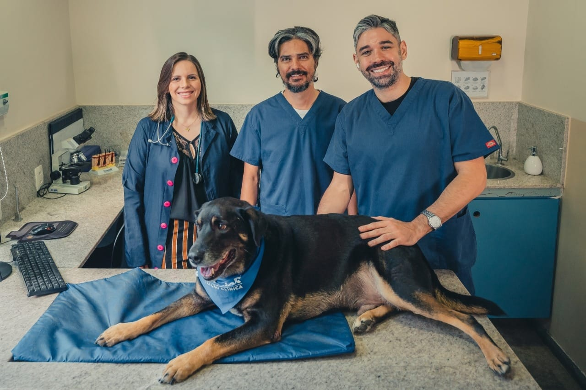

Sobre nós

Inaugurada em 2012 por três médicos veterinários que sonhavam em oferecer aos pets e seus tutores um atendimento mais cuidadoso e humanizado. Nossa equipe conta com um time de especialistas que hoje são referência em Minas Gerais, em suas áreas de atuação. Somos a primeira clínica a praticar as técnicas Livre do Medo (Fear Free Pets ®) em todo o Brasil. Isso significa que nos preocupamos com a saúde emocional e física do seu pet, trabalhando durante toda a visita à clínica para minimizar que o seu cão ou gato se sinta ameaçado, com medo, estressado ou ansioso.
 Clinica de Cuidados de Animais Silvestres CAS criado por Matheus Salomão
Clinica de Cuidados de Animais Silvestres CAS criado por Matheus Salomão Rua Capitão José Aguirre Camargo - São Paulo, SP 02357-120
Rua Capitão José Aguirre Camargo - São Paulo, SP 02357-120  (19) 3748-1361
(19) 3748-1361